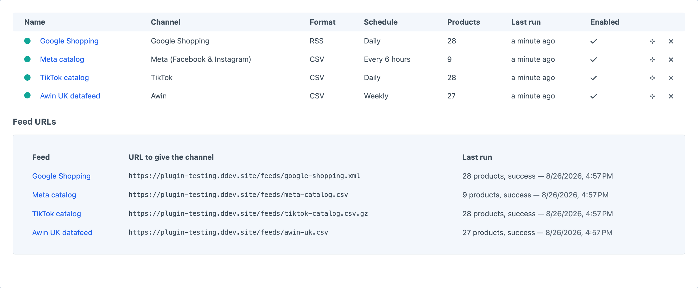
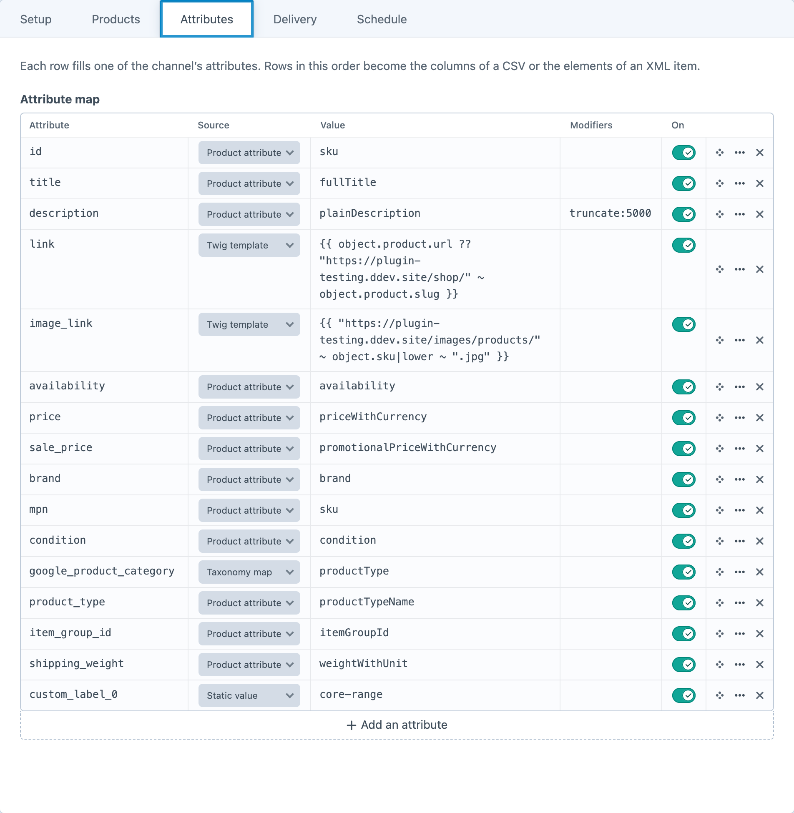
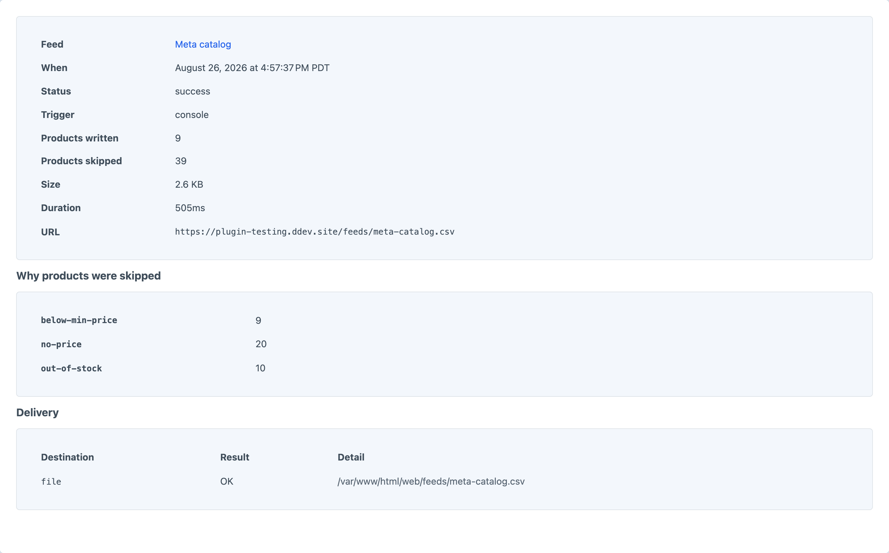

Product feeds for every channel that wants one.
Google, Meta, Pinterest, Microsoft, TikTok and ten more — mapped, scheduled and delivered.
One attribute map per channel, generated on a schedule and written to a URL you paste into Merchant Center — instead of a template you maintain by hand for every channel you add.
Each one arrives with that merchant’s attribute names, required set and file shape already mapped to your Commerce data.
Point each of the channel’s attributes at a product attribute, a custom field, a static value, the taxonomy map, or Twig.
The same mapping writes each channel’s own vocabulary — the detail a hand-written template gets wrong on channel number two.
Every run writes the local file first, so a dead FTP server can never take the public feed URL down with it.
Or serve it live at /eat/feed/<handle>, cached for the schedule interval.
Feeds regenerate on their own interval, in the queue — and on a product save, debounced, if you want the channel to know sooner.
What each channel gets, when it was last built, and the address to paste into it.

Attribute, source, value, modifiers. Drag to reorder — that order is the CSV’s columns.

Every run records what was written, what was skipped and why, and what happened at each destination.
